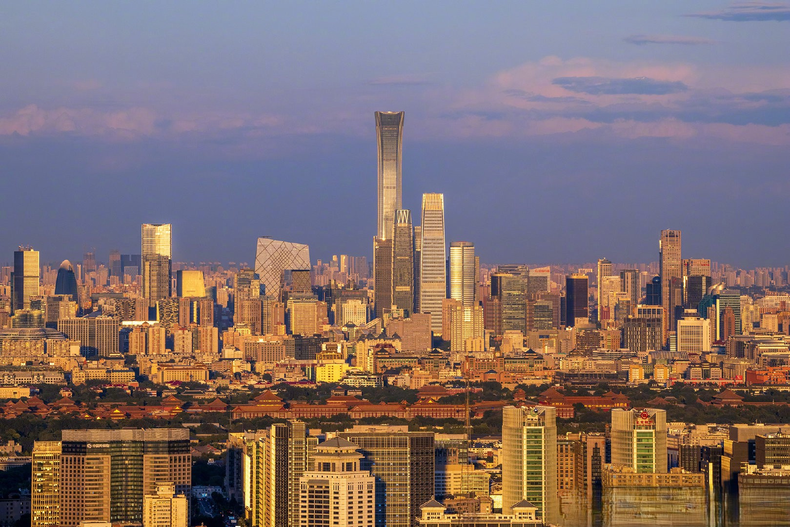
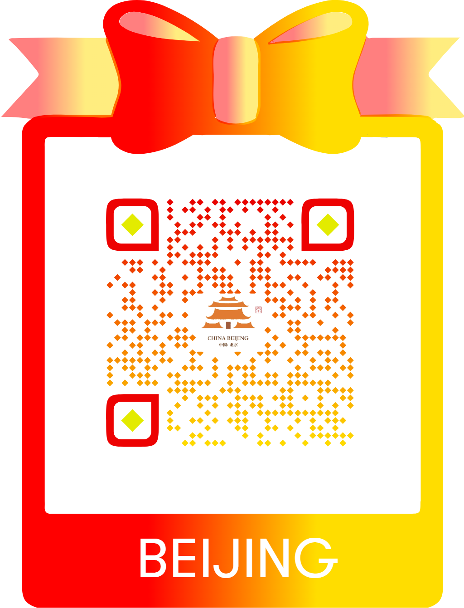

🏛️
Historical Landmarks
Beijing is home to globally recognized heritage sites such as imperial palaces, temples, and centuries-old city structures.
Promoting My Hometown City
Ancient walls, hidden alleys, modern skylines, and unforgettable food— Beijing is where history and youth culture meet in one city.
City Identity
Beijing is not just famous for monuments and political importance. Its real charm lives in the details: old hutongs filled with stories, steaming street food, neighborhood parks where people dance at sunrise, and a rhythm that blends tradition with ambition.
This website is designed for young travelers, international students, and curious explorers who want more than postcard attractions. It introduces Beijing as a city you can feel, taste, and experience.

Top Highlights
From iconic heritage to everyday local culture, these experiences define the city.
Beijing is home to globally recognized heritage sites such as imperial palaces, temples, and centuries-old city structures.
The city’s food scene ranges from famous roast duck to hidden dumpling shops, local noodle stalls, and midnight snacks.
Art districts, indie cafés, photography spots, and youth subcultures make Beijing feel dynamic and current.
Traditional alleyways reveal the human side of the city—small courtyards, local stores, and a slower, intimate atmosphere.
User Journey
Strong visuals and emotional storytelling introduce Beijing as a living city, not just a tourist destination.
Visitors quickly understand the city’s identity through landmarks, culture, and lifestyle highlights.
The second page invites users into a niche experience: hidden food gems and authentic local tastes.
Quick Travel Notes
Skip generic tourist lists and discover the flavors locals remember.
Open Food Deep DiveDigital Promo
This website can be expanded into a short animated Instagram reel, a campus tourism promo, or a QR-linked mini travel guide for events and exhibitions.
Suggested campaign slogan: “Beijing: Old Soul, New Energy.”

Scan to explore the city experience.